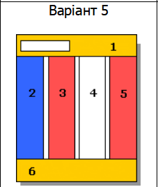
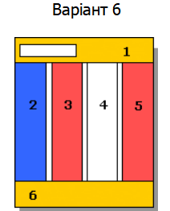
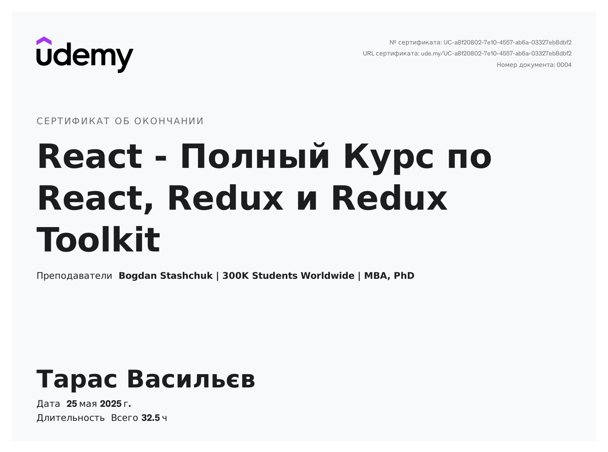

Тема, мета, місце розташування WEB-застосунка та місце звітного HTML-документу
Тема: ВЕРСТКА HTML-ДОКУМЕНТУ. БЛОКОВА ВЕРСТКА. ВЕРСТКА ЗАСОБАМИ CSS та FLEXBOX.
Мета: Придбати практичні навички роботи верстки сторінок засобами CSS, верстки на основі плаваючих елементів, з’ясувати переваги та недоліки типів макетів веб-сторінок придбати практичні навички роботи верстки сторінок засобами CSS та FLEXBOX
Завдання 1
Завдання 2
Засобами HTML та CSS виконати Завдання №2 у звітному HTML-документі , а саме:
• Розмітку за допомогою таблиці (номер варіанта – остання цифра у списку групи)
o Фіксована таблична верстка
o Гумова таблична верстка
• Розмітку за допомогою блоків (плаваючих елементів) (номер варіанта – остання цифра у
списку групи + 1)
o Фіксована блокова верстка
o Гумова блокова верстка
Фіксована таблична верстка
Варіант 5
| 1 | |||
| 2 | 3 | 4 | 5 |
| 6 | |||
Гумова таблична верстка
| 1 | |||
| 2 | 3 | 4 | 5 | 6 |
Фіксована блокова верстка
Варіант 6
Гумова блокова верстка
Завдання 3
Що ви опануєте?

HTML / CSS

JavaScript

React

React

TypeScript

Angular

GitHub

МИ ГАРАНТУЄМО НАШИМ ВИПУСКНИКАМ ПРАЦЕВЛАШТУВАННЯ
В НЕ ЗАЛЕЖНОСТІ ВІД
ВІКУ
- ✔️ НАВІТЬ У ЗРІЛОМУ ВІЦІ — максимальний вік студента доходить до 63 років.
- ✔️ НАВІТЬ БЕЗ ЗНАННЯ АНГЛІЙСЬКОЇ — курс включає вивчення англійської.
- ✔️ НАВІТЬ БЕЗ ПРОФІЛЬНОЇ ОСВІТИ ТА НАВИЧОК — 70% студентів не мають освіти у сфері ІТ.
- ✔️ НАВІТЬ БЕЗ ЗНАНЬ ПРОГРАМУВАННЯ — більшість студентів починає з нуля.
Курс програмування
JAVA з працевлаштуванням
-
СТАЖУВАННЯ В ІТ-КОМПАНІЇ
Покажи себе на курсі і ще до закінчення навчання ми відправимо тебе на стажування в ІТ-компанію. -
ТРИ ВИПУСКНИХ ПРОЕКТИ
Наприкінці курсу ти будеш мати три проекти, з якими легко працевлаштуєшся. -
ІНТЕНСИВНІСТЬ
На відміну від інших наші студенти вчаться 6 разів на тиждень впродовж усього терміну. Саме тому вони краще за випускників всіх інших шкіл та легко працевлаштовуються.
Сертифікат
Це панель для демонстрації сертифіката.
